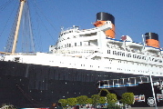
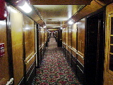
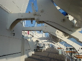
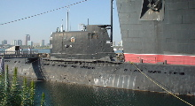

昼過ぎに起きだして近場のSizzlerへ。
一番安い牛肉ステーキ(小さい)を注文して料金を支払った後、サラダバーをパクつきながら延々ペーパーバックを読んでました。たまにはこんな気取ったことだってしてみたい(2:00PM)。
ウェイター/ウェイトレスは席を通りがかる度に「Anything ok?」と聞いてくるので本を読み続けることにそれなりのプレッシャを感じていたのですが、ある時を境にぱたりとやって来なくなりました。どうしたのかなと思っていたのですが、背後に妙な気配を感じて振り向いたところ、ウェイター/ウェイトレス達が、僕の真後ろのテーブルでまかないステーキをパクついていました。新手のプレッシャが！時刻が時刻だけに仕方ないとは思いますが、もっと隅の方に空いているテーブルはいっぱいあるじゃないか(3:30PM)。
最終的に、食事の終わったウェイトレスに、つまようじとミントガムを持って来られた時点で敗北して店を去りました(4:20PM)。頑張った！(気取れていません)
なかなかに先行きの暗い話を聞いて、多いに落ち込む。うへー。
休日なので、何となく南に車を走らせてみました。
フリーウェイを降りるタイミングを見誤り、いきなり港湾の工業地帯に紛れ込んだ時は、あまりの殺風景さにどうしようかと思いましたが、何となく観光ぽい匂いのする方(抽象的)へ逃げていると、クイーンマリー号の展示に辿り着きました。「呪われたクイーンマリー号」のシナリオをパーティを組まずにチャレンジです(無茶)。

入場券だけで参加可能という話だったので、クイーンマリー号船底の怪奇スポットを巡るゴーストツアーに参加。大戦中にたくさんの兵士を輸送したり、謎のボイラー爆発や衝突事故など、その手の話題には事欠かないようです。
案内のスタッフが一通りクイーンマリー号の怪奇現象について説明した後、一行は最初の心霊スポットである室内プール(夜中に誰もいないはずのプールで遊ぶ音が！)へと進みます。
「写真は撮っていいのかい？」
「もちろんさ！しかしデモ中は控えておくれよ」
「デモはもう始まっているのかい？」
「まださ！」
という素敵なやりとりが。ゴーストツアーなのにネタバレしすぎです。
ツアー自体は、ポルターガイストと称してスピーカーで音を出したり、ドライアイスを炊いたりするだけの他愛のないものでしたが、船自体が70年近い歴史を持っているのでそれなりにおもしろかったです。あと30年もすれば物の怪になりますよ(なりません)。
その後、一人で船内を散策。全長は300m以上あるので異様に広いです。廊下もデッキも、なんか延々先まで続いています。
 
クイーンマリー号の横のロシアのディーゼル潜水艦「スコーピオン」にも潜入。打って変わって内部が狭すぎ！キリル文字の入った計器類にときめきます。

そんなわけで適当に出発した割には楽しんで帰還しました。エフェクトを期待されている方には申し訳ないです。おまけで勘弁してください。
おまけ：潜水艦内部のカッコイイ写真 (写真1)(写真2)
{kind=link}
{kind=link}